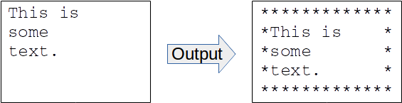
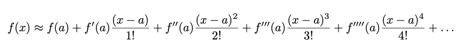
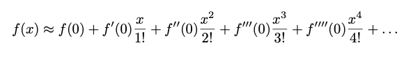
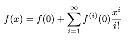
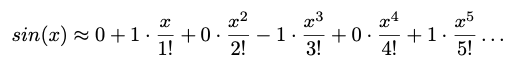
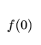
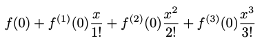

This is your first, easy homework assignment. The others will be larger and more interesting. This one will let you get started writing, formatting, compiling, running and testing simple C programs. This requires that you familiarize yourself with the Common Platform and our Coding Style Guidelines. A full list of the relevant Learning Outcomes is included at the end of this page.
This assignment is to be done individually. You should be able to solve these problems using the material up to the end of the Lecture 2 slides. You’ll also need the bool type from near the start of lecture 4. Please don’t go find other resources for designing and coding your solution. Solving these problems with material from just the first few lectures should let you start on your code early, and it will give you a chance to practice using basic C features for things like I/O.
Before attempting this assignment, you may want to complete exercise 1. The course Moodle site describes some alternatives for how you can complete this first exercise, depending on what operating system you’re using and how you’d like to work. You can try out a few of these options for the first exercise, then use whatever technique you like best on this homework assignment.
To get started on this assignment, you’ll need to clone your GitHub repo and unpack the given starter into the hw1 directory of your repo. You’ll submit by committing files to your repo and pushing the changes back up to GitHub.
To access your repo on github.com, you’ll need a key
pair. You’ll need to tell GitHub the public key so it can validate your
authenticity when you try to clone your repo or whenever you need to
push or pull changes. Probably, you’ve already made a key pair and
registered it with GitHub in a previous class. If not, I’ve tried to
describe what you’ll need to do below. More extensive documentation for
this is available. At github.coma, you can read about how
to [Generate a new SSH
key)(https://docs.github.com/en/enterprise-cloud@latest/authentication/connecting-to-github-with-ssh/generating-a-new-ssh-key-and-adding-it-to-the-ssh-agent?platform=linux#generating-a-new-ssh-key).
After you make an SSH key, you can Add
the SSH key to your GitHub account. Finally, you’ll need to Authorize
your SSH key before you can use it with your NCSU repositories. For
a couple of these pages, there are tabs near the top of the document
document to get instructions specific to MacOS, Windows or Linux.
To access your repo from the command line, you’ll need a key pair stored on whatever system you plan to run git command on. Maybe you plan to run git commands on the university remote Linux machines. If so, you’ll want to make a key pair on one of these systems and let it be stored in your NCSU drive space, so it will be there whenever you run commands from a university Linux machine. Or, maybe you plan to run git commands from your laptop. If so, you’ll want to generate a key pair on your laptop and let it be stored under you home directory on your laptop. Of course, if you plan to run git on your own system, you’ll need to have git or git bash installed.
If you plan to generate a new key pair, be sure you don’t
accidentally overwrite a key that you might need to use again in the
future. When you make a new key pair, you get to choose a pathname for
that key. If you already have a key with the default name, you can
choose a different filename under your .ssh directory. If
you already have a key pair, you can probably just use that to
authenticate yourself with GitHub. If you already have a pair of files
named ‘id_’ and ’id_.pub’ under your .ssh
directory, you could try skipping ahead to the “Adding Your Key Pair to
GitHub” and see if you can just use your existing key. In fact, if
you’ve taken prerequisite classes at NC state, you’ve probably already
done this.
The command for generating a key pair should be the same, whither you’re working on Linux, MacOS or Windows. If you plan to run git commands on one of the university Linux machines, you can login on one of these systems and enter the following command from the shell prompt. From a MacOS system, you can enter the command from a terminal window. On windows, you should be able to run this from a git bash window. Before you enter the command, replace the dummy email address at the end with your actual NCSU email address.
ssh-keygen -t ed25519 -C "your_email@example.com"When you enter the ssh-keygen command, you get a chance to choose an alternative filename for the key, if you want to (e.g., to avoid overwriting a key you’ve previously generated). You can also enter a passphrase if you want. This provides some additional security for your new key, but you will need to enter the same passphrase in order to use the key in the future. If you feel like you don’t need additional security, you can just hit enter for a blank passphrase.
When you generate a key pair on the remote Linux machines, it doesn’t automatically get its file permissions set properly. I think this is because it’s being stored in NCSU drive. Before you can use the key, you will need to log out and then log back in on the remote Linux machines. I’m guessing there’s a script that gets run when you login to fix the permissions.
After you make a key, have a look at you public key. In your terminal
window, if you’re in your home directory, you should be able to see your
public key by entering a command like the following. Here, we’re
assuming you used the default name for your new key pair. If you used a
different filename, use that name here instead of
id_ed25519, with .pub at the end to get the
public side of the key pair.
cat .ssh/id_ed25519.pubAfter you enter the cat command, you should see a copy
of your public key in the terminal. It will probably be short, just a
couple of lines. Copy this text so you can paste it into a text field in
GitHub later on.
After you have a copy of your key, visit github.com and
login. Use unity_ncstate as your username, where unity
is your unity ID. Then, press the “Sign in with your identity provider”
button below and you should get a chance to login using your NC State
credentials. From your main dashboard page, select the menu in the upper
right corner, then select “Settings”.
From the settings page, you should see an item for “SSH and GPG keys” over on the left. Select this and it should take you to a page where you can provide a new SSH key for authentication. This might be a good time to check and see if you already have a key entered. Maybe you did this in a previous class.
If you don’t already have an authentication key you can use, choose the green “New SSH key” button near the top. From here, you can enter a short description of the key you’re entering (e.g., Remote Linux” or “My Windows Laptop”). This will help you remember what the key goes with. Maybe there will be a time when you want to use the key again or when you decide you can delete it.
You can leave the “Key type” as “Authentication Key”, then paste in the contents of your public key file into the “Key” field. Press the “Add SSH key” button near the bottom and now you should see an entry for the new key in your list of authentication keys.
Your new key will let you clone, push and pull without having to enter a password, but, before you can use it, you need to authorize the key for use with your NCSU GitHub account. After you’ve added your key via the “SSH and GPG keys” page in your settings, you should see a menu next to your new key that says “Configure SSO”. This should pop up a list of organizations for which you can authorize the key. Select “Authorize” next to the ncstate-csc-coursework organization. This will probably require you to re-authorize with NC State, but, once your done, the key should be marked as authorized and ready to use.
Everyone in CSC 230 has been assigned their own NCSU GitHub
repository to be used for homeworks and the project the semester. It
already has subdirectories (mostly empty) for working on each of the
homeworks and the final project. How do you figure out what repo you’ve
been assigned? Use a web browser to visit github.com. To authenticate, you can enter
unity_ncstate as your username, where unity is your
unity ID. Then click “Sign in with your identity provider” below. This
should take you to an NC State page where you can authenticate with your
regular NCSU credentials (and probably some two-factor authentication).
After authenticating, you should see a drop-down menu over in the
upper-left, probably with unity_ncstate as your current
organization. Switch this to ncstate-csc-coursework, and
then select “Browse organization’s Repositories” just below on the
left.
This should give you a lit of repositories you can access. Among these, there should be one named csc230-f26-unity, where unity is your unity ID. Click on this and you should see the main page for your CSC230 GitHub repo.
To clone your repository, You should be able to enter a command like the following, where unity is your unity ID. You can also get the URL for this clone operation by clicking on the green “Code” box on repo’s main page, selecting the SSH tab and then copying the URL it gives you. Enter this command on whatever machine where you plan to run git commands (i.e., the system on which you generated your key pair). Also, be sure to change directory to the place you plan to work on homeworks before you clone your repo. If you make a mistake on this, you can always clone another copy of your repo somewhere else.
$ git clone git@github.com:ncstate-csc-coursework/csc230-f26-unity.gitIf you have successfully created a key pair and registered it with GitHub, this command should be able to clone your repo without any additional help from you. If you used a passphrase to protect your key pair, you may be asked to enter it here.
If you used an alternative name when you saved your key pair, you’ll
need to enter a command like the following before you run the
git clone command. This tells git to use your alternative
key pair, until you change it again or until you logout. In the command,
change the id_alt_key to the name of the file you used when you
saved your key.
$ export GIT_SSH_COMMAND="ssh -i ~/.ssh/id_alt_key -o IdentitiesOnly=yes"After successfully cloning your repo, you should get a new
subdirectory with a name matching your repo name. If you cd
into the directory, you should see directories for each homework
assignment and for the final project. You’ll want to do your development
for this assignment right under the hw1 directory. That’s
where we’ll expect to find your homework 1 files when we’re grading.
There is a starter file for this assignment, starter1.tgz. This file is a compressed tar
archive containing several source files and test files you’ll need. You
can get a copy of the starter by using the link in this document. To
extract the files it contains, you can temporarily put your copy in the
hw1 directory of your cloned repo. Then, you should be able
to unpack it with the following command:
$ tar xzvpf starter1.tgzOnce you start working on the assignment, be sure you don’t
accidentally commit the starter archive to your repo (that would be an
example of an extraneous file that doesn’t need to be there). After
you’ve successfully unpacked it, you may want to delete the starter from
your hw1 directory, or move it out of your repo.
$ rm starter1.tgzOr, if you’re working on one of the EOS Linux machines, instead of
copying the starter file to your working directory, you can unpack it
from a shared copy that’s available on these systems. You should be able
to change directory to hw1 in your cloned repo and run the
following command. If you unpack the starter like this, rather than
downloading your own copy, then you won’t need to delete it when you’re
done, and you won’t have to worry about a copy of the starter getting
submitted to your repo.
$ tar xzvpf /mnt/coe/workspace/csc/CSC230/hw/hw1/starter1.tgzIn general, when we grade your programs, we expect them to behave
exactly as described in the assignment. This includes producing the
right output with the right spacing and line termination. The homework 1
starter includes some input files and expected output files to help you
make sure your programs are behaving correctly. As described below, you
can capture your program’s output in a file and then use the
diff command to compare the output you got with the output
we were expecting you to get. If diff sees any differences,
even in little things like spacing, line termination or capitalization,
it will tell you where they are. There’s a little guide linked from the
course home page explaining how to use
diff and how to read its output.
If you’ve set up your repository properly, pushing your changes to
your assigned CSC 230 repository should be all that’s required for
submission. When you’re done, we’re expecting your repo to have the
following files under the hw1 directory. You can use the web interface
on github.com to confirm that the right versions of all
your files made it.
style.c : The source file for the first little
program in this homework.
expected-style.txt : The expected output file for
the style.c program.
textbox.c : The source file for the second program
in this homework.
input-text-1.txt .. input-text-4.txt :
Test input files for the text.c program.
expected-text-1.txt ..
expected-text-4.txt : Expected output files for the
text.c program.
trig.c : The source file for the last program in
this homework.
input-trig-1.txt .. input-trig-5.txt :
Test input files for the trig.c program.
expected-trig-1.txt ..
expected-trig-5.txt : Expected output files for the
trig.c program.
.gitignore : A support file for this assignment,
telling git some files to not commit to the repo.
To submit your solution, you’ll need to commit your latest version to
your local repository then push up to your remote repo in
github.com.
Before you can commit, you’ll need to add each new file to your repo. This tells git to track the file and stage the current version for the next commit. You can add files one at a time using a command like:
$ git add some-file-nameWhen you’re adding new files to your repo, you can use the shell
wildcard character to match multiple, similar filenames. For example,
the following will add all files ending with a .c extension
to your repo.
$ git add *.cWhen you start your homework, don’t forget to add the
.gitignore file to your repo. Since its name starts with a
period, it’s considered a hidden file. Commands like ls
won’t show this file automatically, so it might be easy to forget.
$ git add .gitignoreThis is a place to be careful. You don’t want to accidentally add
temporary files or other garbage to your repo. After you’ve added new
files, it’s probably a good idea to do a git status to make
sure you’re committing the files you want to. If you accidentally add
some files you don’ want, you can un-stage it with a command like:
$ git restore --staged bad-file.txtAfter you’ve added any new files to your repo, you can commit all the
staged changes by running git commit.
$ git commitWhen you run git commit without any other options, it
will only update files you’ve added since your last commit, and it will
automatically start up an editor to let you type in a short commit
message. Often, students will prefer to run git like the following. The
-am option tells git to automatically commit any tracked
files that have been modified (that’s the a part of the
option). With this, you only have to explicitly add files that weren’t
previously tracked as part of your repo. The ‘-m’ part of this option
tells git that you want to give a commit message right on the command
line instead of starting up a text editor to write it. The quoted string
at the end is the commit message you want to provide.
$ git commit -am "<a meaningful message about what you're committing>"Beware, a commit doesn’t actually submit anything
for grading. It just puts changes in the local copy of your git repo. To
push changes up to your repo on github.com, you need to use
the push command:
$ git pushYou should plan to commit and push often as you develop your solution, whenever you finish making a significant change to your work. This will help to show that you’re working on the assignment. Whenever you’ve made a set of changes you’re happy with, you can run the following to update your submission.
$ git add any-new-files
$ git status
$ git commit -am "<a meaningful message about what you're committing>"
$ git pushBe careful not to commit files that don’t need to be part of your repo. Temporary files or files that can be easily re-generated will just take up space and obscure what’s really changing as you modify your source code.
The .gitignore file helps with this, but it’s always a
good idea to check with git status before you commit, to
make sure you’re getting what you expect.
The program, style.c is an example of some bad style. It
has everything, bad or missing comments, bad curly bracket placement,
some hard tabs for indentation, some incorrect line termination, no line
termination at the end of the last line, maybe more problems. Edit this
program to make it consistent with the class style
guidelines.
The style guide requires particular types of block comments before each function and at the top of each file. After reformatting the program, add these comments. You may need to read the code for the various functions so your comments can summarize what they each do. You’ll also find some opportunities to make sure the program uses meaningfully-named constants instead of some magic numbers. Remember that your defined constants also need a short javadoc comment saying what they represent.
To edit the style.c source file, you can use a text
editor or the IDE of your choice. Most of the style errors will be easy
to see by just looking at the source file and consulting the class style
guide document. Some style errors are in the whitespace of the source
file (spaces or line termination). These may be more difficult to see in
your editor.
One way to check for otherwise invisible style mistakes is to use the cat program with the -A option. For example, you could use cat as follows. Here, the dollar sign at the very start represents your shell prompt (don’t type it as part of the command). The dollar signs at the end of the rest of the lines are part of the cat output.
$ cat -A style.c
#include <stdio.h>$
#include <stdlib.h>$
$
#define SEVENTY 72$
$
void printWord( int x )$
{$
for ( int i = 0; i < x; i++ )$
{$
// Print a random lower-case letter.$
... more cat output omitted ...When run this way, the cat program will automatically put a dollar sign at the end of every line, where it finds a newline character. It will show other non-printable characters using escape sequences. For example, a tab character will be shown as ‘^I’, and it will show a carriage return (part of line termination on a Windows machine) as ‘^M’. You can use this to check for tabs used for indentation, bad line termination and to make sure the last line of the file has line termination at the end.
If you see any of these problems in style.c, you’ll want to use your text editor to delete the bad characters and replace them if needed. For example, if there are tabs used for indentation, you will need to delete them and replace them with an appropriate number of spaces.
If you have trouble correcting the line termination in the file, you
may want to try the dos2unix command installed on the
common platform systems. It can change the type of line termination used
everywhere in a text file. There’s a document, “Understanding Line
Termination” up near the top of our Moodle page. It explains line
termination, and includes some instructions for running
dos2unix on the common platform systems.
Be sure to read over the whole style guide as you’re fixing the style.c program. There are lots of errors to fix, and you will need to change some of the source code and add comments to fix them all.
When your style.c program runs (even before you correct
the style), it should exit with a successful exit status and produce the
following output. The starter also includes a expected-style.txt file
you can use to make sure your style-corrected program produces exactly
the output we’re expecting (a randomly-generated paragraph of text).
You should be able to build and run the program as follows.
$ gcc -Wall -std=c99 style.c -o style
$ ./style
wlrb mqbhcd r owkk hiddqsc xrjm wfr sjyb dbef arcbynecd ggx pklore
nmpa qfwkho kmcoqhnw kuewhsqmgb uqcljj vsw dkqtbxi mvtrrbljpt snfwzqfj
fadrrwsof b nuvqhff saqxwpqcac hchzv rkmlno jkpqpx jxkitzyx cbhhkic
oendtomfg wdwf gpxiq kuytdlcgde htaciohor tq vwcsgspqo msb agu nny
nz gd wpbtr blnsade guumoqc rubetoky hoachwdvmx rdryxl n qtukwa mleju
wci xubume meya drmydiajxl ghiqfmz lvihjo vsuyoyp yul eim otehzri c
kpggkbb p zrzu xamludf kgruowz i oobpple lwphapjna qhdcnvwdtx bmyppp
uxnspusgd iixqmbfjxj v djsuyib ebmws q oygyxym evypzvje ebeocfu
sxdixtigsi ehkch dflilrjq nxzt rsvbspkyh enbppkqtp dbuotbbqcw vrf ju jd
tg iqvdg ijvwcya bwewpjvyg hljxepb iwuqzdzu du zv fspqp wuz f ovydd
Words: 103To make sure your program’s output is exactly right, you can capture it in a file and then use diff to compare that file to the expected output. The following commands show how to do that, including a check of the program’s exit status to make sure it ran successfully:
$ ./style >| output.txt
$ echo $?
0
$ diff output.txt expected-style.txtThis program’s output depends on the random number generator. If you run it on a system that’s not a common platform machine, you may get a different sequence of random numbers, so your output may not match the expected output. Be sure to check it on a real common platform system to make sure you’re getting the output we expect. Your style corrections shouldn’t change the program behavior, but checking the output is a good way to make sure you didn’t modify the program’s behavior accidentally.
For the style.c program, your submission will be graded
according to the following:
Have a look at the textbox.c source file. This program
is intended to give you a chance to try reading input
character-by-character using getchar() and printing characters using
putchar(). The overall skeleton of this program is done for you, but
you’ll need to fill in the bodies of the functions to get it
working.
The job of this program is to print text from standard input, but with a border around the text. The figure below shows how it’s supposed to work.

The border drawn around the text is a fixed-width, and made from a chosen character. It should be tall enough to contain every line read from standard input. Both the box width and the character it’s made of are specified via preprocessor constants, so it would be easy to change them and then re-compile the program. We’ll use a border that’s made of asterisks and contains lines of 60 characters (so, a lot wider than the figure above shows).
This width value is the length of each line of text inside the border. With a border character at the start and end of each output line, these will actually be two characters longer. So, by default, output lines will all be 62 characters, with 60 characters in between he first and last character of the border. If the input is empty, then the output should just have the top line of 62 asterisks and the bottom line of 62 asterisks, with nothing in between.
Input lines may not all be exactly the right length; probably, many of them will be shorter than 60 characters or longer. We don’t know how to work with strings yet, so we’ll have to work character-by-character. As you’re reading the input and printing the output, you’ll need to count the characters on the current line. For lines that are shorter than 60 characters, you’ll need to print some extra spaces at the end, to get the output length up to 60 characters. For input lines that are too long, you’ll need to read and print the first 60 characters. After that, you’ll still need to read the rest of the characters up to the end of the line, but you won’t want to print more than the first 60 characters to the output.
Your program will define and use the following three functions. You can have more if you want, but we’ll be looking for at least these three.
void lineOfChars( char ch, int count )
This function prints out multiple copies of the given character,
followed by a newline. The number of copies is determined by the count
parameter. Use this function to help print the top and bottom border
around the text.
bool paddedLine()
This function will read and print a single line of text inside
the border. Your main function will call this over and over, once for
each line of input. The function returns true or false to tell the
caller if there was another input line to process. If it successfully
reads (and prints) an input line, it should return true. Otherwise
(i.e., it hits EOF before it can read any characters), it should return
false to tell the caller that there’s no more text to put in the box.
This function will read the text from standard input and print to
standard output. If the line of text isn’t long enough, it will add
extra spaces at the end to make the box rectangular. If a line of text
is too long, it will read and discard extra characters on the line
(i.e., up to the end-of-line) to keep the box rectangular.
We don’t know how to store strings yet, so this function will need to work by reading in and handling just one character at a time. You can do this by keeping up with how many characters you’ve read in for the current line and deciding what to do with each character as you read it. Remember, each time the paddedLine() function is called, it should read in a whole line of characters, but it may not be able to print all those characters and it may have to print some extra characters. Specifically, if the line is shorter than the width of the box, it will need to print some extra spaces at the end. If the line is longer than the width of the box, the function will still need to read the whole line; it just won’t print any of the characters out past the end of the box.
This function is probably the most fun/tricky part of this assignment. The test cases provided with the starter will help you try out your function’s behavior and make sure it’s doing the right thing in all situations. When printing out a line in the middle part of the text box, you can either make main() responsible for printing the border characters at the start and the end, or you can make this function handle it, whichever seems easier to you.
int main()
This is, of course, the starting point of your program. It will use the
other two functions to print the text from standard input with a border
around it.
Be sure to fill in the empty block comments in this program according to the style guide. Remember, a file comment has a short summary of the file/program, along with a file and an author tag. A block comment on a function needs a short summary of what the function does, along with param tags for any parameters the function takes, and return tag if it’s not a void function.
Compile your program using the following command.
$ gcc -Wall -std=c99 textbox.c -o textboxYou can run the program and type input to it yourself, but the output will look a lot better if you use redirection to read input from a file. If you just want to see what your program’s output looks like, you can run it like:
$ ./textbox < input-text-1.txtIf you really want to make sure your output is right, you can capture
the output in file and compare it against one of our expected output
examples. The >| syntax below tells the shell to send
the program’s output to a file rather than letting it go to the terminal
window. Even if the output file already exists, this syntax tells the
shell to overwrite it. Try running your program as follows to tell it to
read input from our first test case (input-text-1.txt) and send output
to a file named output.txt. Then, check your programs exit
status to make sure it reported successful execution, and use diff to
help make sure it produced output that matches what we were
expecting.
$ ./textbox < input-text-1.txt >| output.txt
$ echo $?
0
$ diff output.txt expected-text-1.txtYou can use similar commands to test your program against each of the four test cases we’re providing. Here’s what they each do:
This test input contains five lines, each one 60 characters long, exactly long enough to fill a line of the box. It should be easy.
This test has lines that are all shorter than the box width, so they’ll all have to be padded with extra spaces at the end to make the box the right width.
This test has some lines that are too long, so the extra characters at the end will have to be discarded as the line is processed.
This test contains a few lines of text, some that have to be padded with spaces and some (one) that has to be truncated.
Remember, you need check the exit status right after you run your
program. If you get an exit status of zero and diff doesn’t report any
differences between the expected output and the actual output you got,
then it looks like your program is behaving correctly. If diff notices
any differences, it will report the line number where there’s a
discrepancy, along with the contents of the lines that don’t match. If
you have trouble interpreting the output of diff, you can try out the
sdiff command. This works like diff, but it will display
the expected and actual output files side by side, and may make it
easier to see inconsistencies between the files. To use sdiff, just
replace diff with sdiff in the shell code
above.
For this part of the assignment, you’ll be submitting your modified
source file, textbox.c to the Homework 1 assignment in
Moodle. Don’t pack up your submission in an archive; just submit each of
your sources files to the assignment. Your edits to
textbox.c will be graded according to the following:
C has a math library, containing functions for things like square roots, logarithms and trigonometry. We’ll learn about this library soon. For this part of the assignment, we’ll try out a way to compute the trigonometric functions yourself, without using the math library.
Our program will be called trig.c. When run, it will
read an angle, x, from the user as a double value. Then, it
will print out a table of successively more accurate approximations of
the sine of x, the cosine of x and the tangent of
x. The following shows a sample execution of our program. The
first line shows the user running the program at the shell prompt. Then,
the user enters 1.75 as the input angle. Then, the program prints out a
table giving better and better approximations. It stops when the result
seems accurate enough. For this example, it takes 14 iterations.
$ ./trig
1.75
terms | sin | cos | tan
------+-------------+-------------+-------------
1 | 0.0000000 | 1.0000000 | 0.0000000
2 | 1.7500000 | 1.0000000 | 1.7500000
3 | 1.7500000 | -0.5312500 | -3.2941176
4 | 0.8567708 | -0.5312500 | -1.6127451
5 | 0.8567708 | -0.1404622 | -6.0996524
6 | 0.9935465 | -0.1404622 | -7.0734067
7 | 0.9935465 | -0.1803552 | -5.5088336
8 | 0.9835733 | -0.1803552 | -5.4535359
9 | 0.9835733 | -0.1781735 | -5.5203117
10 | 0.9839975 | -0.1781735 | -5.5226925
11 | 0.9839975 | -0.1782477 | -5.5203924
12 | 0.9839857 | -0.1782477 | -5.5203262
13 | 0.9839857 | -0.1782460 | -5.5203795
14 | 0.9839860 | -0.1782460 | -5.5203808
Our program expects the user to enter an angle in radians as input. It doesn’t print out a prompt; the user is just expected to know what to do after they run the program. If the user enters a value that can’t be parsed as a double, or if they enter something larger than π or smaller than -π, the program will print a line with the following error message (printed to the terminal, standard output) and then exit with an exit status of 1.
Invalid inputOur program will use the Taylor series to compute our approximation of sine and cosine. You probably remember the Taylor series from calculus class. It lets us compute the value of a function at any point, x, as long as we know the value of the function at a nearby point, a, and we know first, second, third, … derivatives of the function at a. There’s a wikipedia page if you’d like a more detailed reminder.
The following shows the Taylor series for a point, x, based on the value and derivatives of f() at some nearby point, a. The first term of the series is just the value of f() at a. The next term is the derivative of f() at a times (x - a) divided by one factorial. Successive terms are similar. They use successive derivatives of f() (i.e., the second derivative, the third derivative and so on), they use successive powers of (x - a) and they use successive factorials in the denominator.

We can simplify the Taylor series a little bit if we use zero for a. The following shows the series after this simplification. This is how we’ll use the Taylor series for this program.

If we use the notation f(i)( 0 ) to represent the ith derivative of f(), then we can write the Taylor series using summation. To compute an approximation, we’ll just use the first few terms in this infinite series.

This series works out very nicely when we’re using it to compute sine and cosine. The table below shows the value of sin(a) at a = 0 and its successive derivatives. The value of sin( 0 ) is zero. You may remember that the first derivative of sin() is the cosine function, so the first derivative of sin(a) at a = 0 is 1 (that’s the value of cos( 0 ) ). The second derivative of sin() is -sin(), so the value of the second derivative of sin(a) at a = 0 is 0. The third derivative of sin() is -cos(), so the value of the third derivative of sin(a) at a = 0 is -1. The fourth derivative of sin() is just sin(), so the derivatives of sin() form a cycle that goes like: sin() → cos() → -sin() → -cos() → sin()
| derivative of f() | for f(a) = sin(a) | value at a = 0 |
|---|---|---|
| f(a) | sin(a) | 0 |
| f(1)(a) | cos(a) | 1 |
| f(2)(a) | -sin(a) | 0 |
| f(3)(a) | -cos(a) | -1 |
| f(4)(a) | sin(a) | 0 |
| f(5)(a) | cos(a) | 1 |
If we fill in these values to get the taylor series for sin(), we get the following. You can see that half the terms have a coefficient of zero. They don’t affect the result, but we’ll still count them when we’re reporting the number of terms used to get the current approximation (see below).

To compute the Taylor series for cosine, you can think about the value of cosine at zero and what the derivatives of cos() evaluate to. You’ll come up with a series that’s similar to the one above, but with zero, one and negative one coefficients on different terms.
The value of tan( x ) should be equal to sin( x ) / cos( x ). So, whenever we update the approximation for sine or cosine, we can compute a new, more accurate approximation for tangent.
You should use the double type to represent the input angle and other values used to compute your approximations of sine, cosine and tangent. Using the float type may not give you the number of digits of precision we’re expecting and the integer types (short, int, long etc.) don’t have enough capacity to store the large factorials we’ll need.
As shown above, the program’s output table has four columns, with a header at the top. Columns are separated by a vertical bar, with a space on either side of every bar. The first column is an integer, printed in a 5-column field. The rest of the values are all real numbers, printed in an 11-character field and rounded to 7 fractional digits. Each row of the table gives an approximation of the sine, cosine and tangent for the input angle based on the Taylor series.
The first column reports the number of terms used in the Taylor series approximation. Each line of the table uses an additional term, to give us successively more accurate approximations. For terms, we’ll count every term in the taylor series, even the ones with coefficients of zero. So, for example, a Taylor series with just one term would look like:

A series with four terms would look like:

The trig.c program should print out lines of the table
until it gets values for sine and cosine that appear to be accurate
enough. It will check this by comparing the new values for sine and
cosine with the previous values. If each of these differ by no more than
0.000001 (that’s 10-6) from their previous values,
then the program can stop after the current row.
In the example output above, the last two values of sine differ by about 0.0000003 (that’s 3 * 10-7) and the last two estimates for cosine differ by zero, so the program stopped after 14 rows.
The starter contains a partial implementation for the
trig.c program. You get to fill in the functions and create
meaningful named constants to make the program easy to understand and
modify. You’ll define and use the following five functions. You can have
more if you want.
double getAngle()
This function reads the angle input from the user and returns it. It
should check to make sure the user enters a valid real number for the
input and that the value is in the right range. If not, it should print
the “Invalid input” error message and exit the program
unsuccessfully.
double difference( double a, double b )
This function returns the positive difference between a and b. It is
used to tell when the current estimate of sine and cosine is accurate
enough.
void tableHeader()
Print the two header lines at the top of the table.
void tableRow( int terms, double s, double c, double t )
Print a row of the table, reporting the number of terms used for the
Taylor series approximation (terms), the current value of sine (s),
cosine (c) and tangent (t).
int main()
This is the starting point for running your program. It will use the
other four functions to read user input and to help write out the output
table.
Be sure to fill in the block comments for the source file and the bodies of the functions you get to write. For preprocessor constants you define, be sure to give a short Javadoc-style comment that says what they’re for.
You should be able to compile your program using the following gcc command:
$ gcc -Wall -std=c99 trig.c -o trigThis program is easy to run with input entered by the user. While
you’re developing and debugging, you may just want to type in an input
value yourself and watch how the program behaves. Once you think it’s
running correctly, you can start comparing the output against expected
output for our provided test cases. You can use commands like the
following. Here, we’re running the program on test input 1 for the trig
program and sending its output to a file named output.txt.
Immediately after it finishes, we check the exit status. For test input
1, it should exit successfully, and it does here. Then, we compare the
output with the expected output to make sure there are no
differences.
$ ./trig < input-trig-1.txt >| output.txt
$ echo $?
0
$ diff output.txt expected-trig-1.txtFor the trig program, a couple of the tests are invalid inputs. For
these, the program isn’t expected to exit successfully, and it should
print an error message. Below, we’re showing how to test against one of
these invalid test cases. First, we run the program with test input 4
and send its output to a file named output.txt. After that,
we check the exit status. For this test, it should exit with a status of
1, and it does. Then, we check if the program’s output (an error
message) matches the expected output.
$ ./trig < input-trig-4.txt >| output.txt
$ echo $?
1
$ diff output.txt expected-trig-4.txtWe’re providing five test cases to try your program with, each with an input file and an expected output file. They provide different values for the input angle, including two with invalid user input.
This test uses an input angle of 1.0
This test uses an input angle of 3.1415. This is a valid angle, but it will require more terms to converge to an estimate that’s accurate enough.
This test uses an input angle of -0.5. This test should converge more quickly.
This test gives an invalid input. It’s a legal real number but it’s out of range for the program.
This test gives an invalid input. It’s not even a valid real number input.
For this part of the assignment, you’ll be submitting your modified
source file, trig.c to the Homework 1 assignment in Moodle.
Don’t pack up your submission in an archive; just submit each of your
sources files to the assignment. We’ll grade it using the same criteria
as the textbox.c program:
Of course, before you submit, you’ll want to be sure both of your programs are consistent with the CSC 230 Style Guidelines. Also, make sure they compile cleanly (no errors or warnings) on a common platform machine using the required compiler options.
There is a 48 hour window for late submissions. Normally, the late penalty will apply to the entire assignment, but, for this first assignment, we’ll apply it separately to each individual program. If you can’t complete one of the programs by the deadline, you can submit up to 24 hours late for a 10-percent penalty for just that program. Submitting within 48 hours of the on-time deadline will cost you a 20 percent deduction.
While developing, if a program enters an infinite loop, use
Ctrl+C to stop it.
Make sure you submit source files (ending in .c), not your executable programs.
Make sure you’ve submitted all of your files. You can check the web interface for GitHub to make sure everything is there.
Contact the teaching staff if you run into a problem submitting your work. Or, visit Piazza and see if someone else has run into the same kind of problem.
The syllabus lists a number of learning outcomes for this course. For this assignment, we’re mostly just working on one of these objectives: